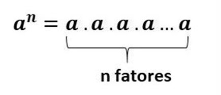

<!DOCTYPE html>
<html lang="en">
<head>
    <meta charset="UTF-8">
    <meta http-equiv="X-UA-Compatible" content="IE=edge">
    <meta name="viewport" content="width=device-width, initial-scale=1.0">
    <title>Potenciação</title>
</head>
<body>
    <title> &nbsp;</title>
</body>
</html>
<!--tag de titulo-->
<h1 align="center">  </h1>
<center>

</center>
	<hr color="blue">
	
        <p>Potenciação em matemática, é a operação de multiplicação de fatores iguais, influenciados pelo número de seu expoente.<br>
            
            <br><b>a= base (sempre sendo a ≠ 0)<br> n= expoente (valor que determina quantas vezes a base será multiplicada) </b><br>
            </p>
            <p>Para entendermos melhor usaremos os seguintes exemplos: <br><br>•&nbsp;2<sup>4</sup>=&nbsp;2.2.2.2=&nbsp;16<br><br>
            <b>2=base &nbsp;&nbsp;&nbsp;&nbsp;&nbsp;&nbsp;4= expoente multiplicador&nbsp;&nbsp;&nbsp;&nbsp;&nbsp;&nbsp;16= resultado da multiplicação </b></p>
            <p>•&nbsp;5<sup>3</sup>=&nbsp;5.5.5&nbsp;=&nbsp;125</p>
            <p> Na potenciação podemos achar alguns expoentes peculiares, que apresentam sua própria resolução, eles são:<br><br>&nbsp;&nbsp;&nbsp;&nbsp;&nbsp;&nbsp;
                &nbsp;&nbsp;&nbsp;&nbsp;&nbsp;&nbsp;&nbsp;&nbsp;&nbsp;&nbsp;&nbsp;&nbsp;•	Quando o expoente for zero (0) o produto sempre será 1..</p>
            <p>&nbsp;&nbsp;&nbsp;&nbsp;&nbsp;&nbsp;&nbsp;&nbsp;&nbsp;&nbsp;&nbsp;&nbsp;&nbsp;&nbsp;&nbsp;&nbsp;&nbsp;&nbsp;&nbsp;&nbsp;&nbsp;&nbsp;&nbsp;&nbsp;&nbsp;
                &nbsp;&nbsp;&nbsp;&nbsp;&nbsp;&nbsp;&nbsp;&nbsp;&nbsp;&nbsp;&nbsp;3<sup>0</sup>=&nbsp;1 &nbsp;&nbsp;&nbsp;&nbsp;&nbsp;&nbsp;&nbsp;&nbsp;&nbsp;&nbsp;
                &nbsp;&nbsp;&nbsp;&nbsp;&nbsp;&nbsp;&nbsp;&nbsp;&nbsp;&nbsp;&nbsp;&nbsp;&nbsp;&nbsp;&nbsp;&nbsp;&nbsp;&nbsp;&nbsp;&nbsp;&nbsp;&nbsp;&nbsp;&nbsp;&nbsp;
                &nbsp;7<sup>0</sup>=1</p>
            <p>&nbsp;&nbsp;&nbsp;&nbsp;&nbsp;&nbsp;&nbsp;&nbsp;&nbsp;&nbsp;&nbsp;&nbsp;&nbsp;&nbsp;&nbsp;&nbsp;&nbsp;&nbsp;•	Toda potência que apresentar expoente 
                número um (1),terá como resultado sua própria base
                <br>&nbsp;&nbsp;&nbsp;&nbsp;&nbsp;&nbsp;&nbsp;&nbsp;&nbsp;&nbsp;&nbsp;&nbsp;&nbsp;&nbsp;&nbsp;&nbsp;&nbsp;&nbsp;&nbsp;&nbsp;&nbsp;&nbsp;&nbsp;&nbsp;&nbsp
                ;&nbsp;&nbsp;&nbsp;&nbsp;&nbsp;&nbsp;&nbsp;&nbsp;&nbsp;&nbsp;&nbsp;9<sup>1</sup>=&nbsp;9 &nbsp;&nbsp;&nbsp;&nbsp;&nbsp;&nbsp;&nbsp;&nbsp;&nbsp;&nbsp;
                &nbsp;&nbsp;&nbsp;&nbsp;&nbsp;&nbsp;&nbsp;&nbsp;&nbsp;&nbsp;&nbsp;&nbsp;&nbsp;&nbsp;&nbsp;&nbsp;&nbsp;&nbsp;&nbsp;&nbsp;&nbsp;&nbsp;&nbsp;&nbsp;&nbsp;
                &nbsp;25<sup>1</sup>=&nbsp;25
                </p>
            <hr color="blue"
            
       <h1> <h3  align="center"> Operações com potenciação </h3></h1>
            <p> Multiplicação <br>
                •	Bases iguais (mantem-se a base e soma os expoentes)<br>
                &nbsp;&nbsp;&nbsp;&nbsp;&nbsp;&nbsp;&nbsp;&nbsp;&nbsp;&nbsp;&nbsp;&nbsp;&nbsp;&nbsp;&nbsp;&nbsp;&nbsp;&nbsp;&nbsp;&nbsp;&nbsp;&nbsp;&nbsp;&nbsp;&nbsp;
                &nbsp;&nbsp;&nbsp;&nbsp;&nbsp;&nbsp;&nbsp;&nbsp;&nbsp;&nbsp;&nbsp;6<sup>7</sup> x 6<sup>3</sup>=&nbsp;6<sup>7+3</sup>=&nbsp;6<sup>10</sup>
             </p>
             <p>Divisão<br>
                •	Bases iguais (mantem-se a base e subtraia os expoentes)<br>
                &nbsp;&nbsp;&nbsp;&nbsp;&nbsp;&nbsp;&nbsp;&nbsp;&nbsp;&nbsp;&nbsp;&nbsp;&nbsp;&nbsp;&nbsp;&nbsp;&nbsp;&nbsp;&nbsp;&nbsp;&nbsp;&nbsp;&nbsp;&nbsp;&nbsp;
                &nbsp;&nbsp;&nbsp;&nbsp;&nbsp;&nbsp;&nbsp;&nbsp;&nbsp;&nbsp;&nbsp;9<sup>3</sup> : 9<sup>2</sup>=&nbsp;9<sup>3-2</sup>=&nbsp;9<sup>1</sup>
            </p>
            <p>Potência de potência<br>
                •	Devemos multiplicar os expoentes.<br>
                &nbsp;&nbsp;&nbsp;&nbsp;&nbsp;&nbsp;&nbsp;&nbsp;&nbsp;&nbsp;&nbsp;&nbsp;&nbsp;&nbsp;&nbsp;&nbsp;&nbsp;&nbsp;&nbsp;&nbsp;&nbsp;&nbsp;&nbsp;&nbsp;&nbsp;
                &nbsp;&nbsp;&nbsp;&nbsp;&nbsp;&nbsp;&nbsp;&nbsp;&nbsp;&nbsp;&nbsp;(7<sup>4</sup>)<sup>2</sup> =&nbsp;7<sup>4.2</sup>=&nbsp;7<sup>8</sup>
            </p>
            <p>Multiplicação de potências com o mesmo expoente<br>
                •	Conserva o expoente e multiplica as bases<br>
                &nbsp;&nbsp;&nbsp;&nbsp;&nbsp;&nbsp;&nbsp;&nbsp;&nbsp;&nbsp;&nbsp;&nbsp;&nbsp;&nbsp;&nbsp;&nbsp;&nbsp;&nbsp;&nbsp;&nbsp;&nbsp;&nbsp;&nbsp;&nbsp;&nbsp;
                &nbsp;&nbsp;&nbsp;&nbsp;&nbsp;&nbsp;&nbsp;&nbsp;&nbsp;&nbsp;&nbsp;4<sup>2</sup> x 6<sup>2</sup> =&nbsp;(6x4)<sup>2</suop>
            </p>
            <hr color="blue"
    </center>
    <h2 align="center"> Exercícios </h2>
    <p>1)&nbsp;O maior número abaixo é:
        <ul>
            <li>A)81<sup>0</sup></li>
            <li>B)81<sup>6</sup></li>
            <li>C)33<sup>1</sup></li>
            <li>D)16<sup>8</sup></li>
        </ul>

    </p>
    <p>2)&nbsp;The Internet Archive é uma organização sem fins lucrativos com o objetivo de catalogar e armazenar todas as páginas WEB da Internet, desde 1996.
         Atualmente, o sistema é gerenciado por cerca de 800 computadores pessoais e ele dispõe de aproximadamente 3 petabytes de memória para armazenamento. 
         Cada petabyte equivale a 220 gigabytes.
        Admitindo-se que um DVD comum é capaz de armazenar 4 gigabytes (na verdade, ele armazena um pouco mais), então o número de DVDs necessários para se
         armazenar 3 petabytes é:
        <ul>
            <li>A)&nbsp;menor que 2<sup>17</sup>&nbsp;e maior que 2<sup>16</sup></li>
            <li>B)&nbsp;menor que 2<sup>20</sup>&nbsp;e maior que 2<sup>19</sup></li>
            <li>C)&nbsp;menor que 2 <sup>19</sup> &nbsp; e maior que 2<sup>18</sup></li> 
            <li>D)&nbsp;maior que 2<sup>20</sup></li>
        </ul>

    </p>
    <p>3)&nbsp;Sabendo que o valor de 57<sup>7</sup> é 78 125, qual o resultado de 58<sup>8</sup>?</p>
    <ul>
        <li>A)&nbsp; 156 250
        <li>B)&nbsp; 390 625
        <li>C)&nbsp; 234 375
        <li>D)&nbsp; 312 500
    </ul>
    <h1>
    <p>Marina Ferreira, Marilha, Ellen e Bruna sousa 1ºD.S Manhã</p></h1>

        
        